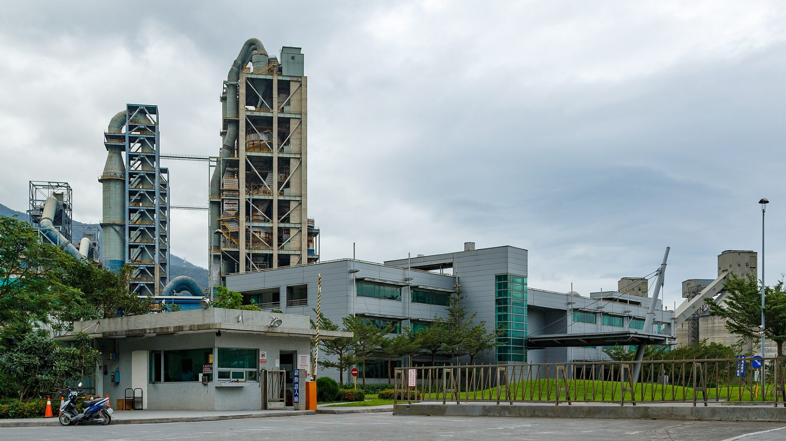
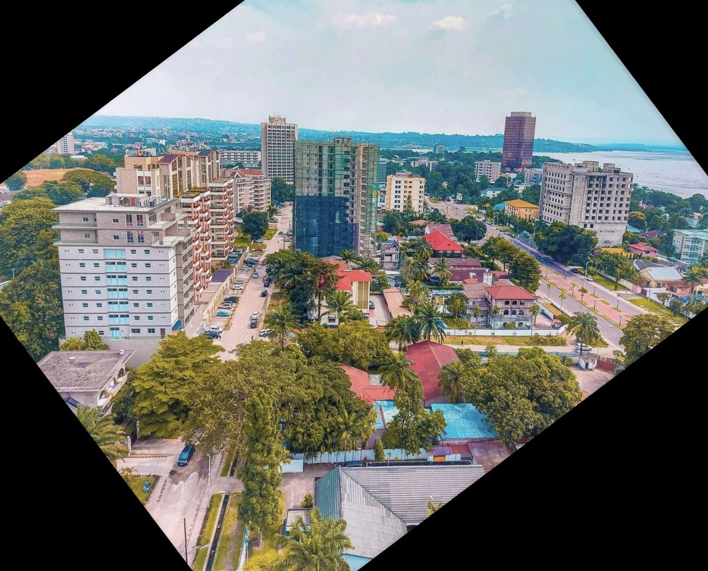

Ciment Portland CEM I 42,5 R
Ciment à haute résistance initiale pour le béton armé, les éléments préfabriqués et les ouvrages d'art. Livré en sacs de 50 kg ou en vrac par citerne.
Voir la fiche →
Une usine à Matadi, une carrière à Luvu, un terminal à Kinshasa. Trois ciments certifiés OCC, du béton prêt à l'emploi et des granulats, livrés par rail, route et fleuve.
Produits
Chaque lot est contrôlé au laboratoire de l'usine avant expédition. Fiches techniques et certificat OCC téléchargeables.
Ciment à haute résistance initiale pour le béton armé, les éléments préfabriqués et les ouvrages d'art. Livré en sacs de 50 kg ou en vrac par citerne.
Voir la fiche →
Le ciment polyvalent des chantiers de bâtiment : fondations, poteaux, poutres, dalles. Bonne maniabilité, montée en résistance régulière, moins de retrait.
Voir la fiche →
Pour les mortiers, enduits, joints et petits ouvrages. Prise rapide, finition facile, le sac le plus vendu chez nos revendeurs de quartier.
Voir la fiche →
Centrale de Limete : bétons C20/25 à C40/50, pompage jusqu'à 36 m, livraison en toupie de 6 et 8 m³ dans un rayon de 40 km. Commande la veille avant 15 h.
Voir la fiche →
Gravillons 5/15 et 15/25, sable de concassage 0/4 et tout-venant 0/31,5 issus de la carrière de Luvu. Chargement sur camion client ou livraison.
Voir la fiche →Sites
Cinq sites reliés par la route nationale n° 1, le chemin de fer Matadi–Kinshasa et le fleuve Congo.


Durabilité et sécurité
Poussières mesurées et publiées, combustibles alternatifs, 96 % de salariés congolais. Les chiffres complets sont dans le rapport annuel.
Chiffres illustratifs : société fictive créée pour la démonstration.
Actualités
Mis en service en mai, le nouveau broyeur vertical de l'usine de Matadi a atteint sa cadence nominale le 21 août après trois mois d'essais. Il remplace le broyeur à boulets n° 1 de 1974 et consomme 30 % d'électricité en moins par tonne.
La capacité de broyage passe à 1,2 Mt/an, au-dessus de la capacité de cuisson, ce qui permet d'importer du clinker en période de pointe.
Les ventes de ciment ont atteint 486 000 tonnes au premier semestre, portées par les chantiers de Kinshasa et l'ouverture du dépôt de Kikwit. Le béton prêt à l'emploi progresse de 24 % à 61 000 m³.
Le four a fonctionné 171 jours sur 181, avec un arrêt programmé de six jours en mars.
Les 640 salariés et 300 sous-traitants ont participé à la journée sécurité annuelle. Le thème de 2026 : les déplacements des camions dans l'enceinte de l'usine, première cause de presqu'accidents relevée en 2025.
Un nouveau plan de circulation sépare les piétons des poids lourds à l'ensachage et au chargement vrac.
Fournisseurs
Nos consultations sont publiées ici. Les entreprises congolaises sont encouragées à se référencer.
| Référence | Objet | Catégorie | Clôture | État | Dossier |
|---|---|---|---|---|---|
| AO-2026-015 | Restauration collective de l'usine de Matadi (contrat 2 ans) | Services | 6 novembre 2026 | À venir | Dossier |
| AO-2026-014 | Fourniture de sacs kraft deux plis, 50 kg, 12 millions d'unités | Fournitures | 10 octobre 2026 | Ouvert | Dossier |
| AO-2026-013 | Transport routier Matadi–Kinshasa–Kikwit, contrat cadre 2027 | Transport | 24 octobre 2026 | Ouvert | Dossier |
| AO-2026-012 | Fourniture de boulets de broyage haute teneur en chrome | Fournitures | 30 septembre 2026 | Ouvert | Dossier |
Où acheter
Comptoir usine, terminal de Kinshasa, dépôts de Boma et Kikwit, et un réseau de revendeurs agréés. Prix affichés en francs congolais, identiques dans tous les dépôts.